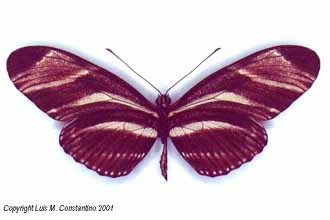
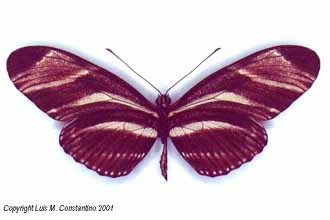

Luis M. Constantino suggests this may be a hybrid between
Heliconius charitonia bassleri and Heliconius erato
chestertonii. He had earlier seen male charitonia mating
with a female erato in his insectary. However, as the
specimen lacks any characteristic erato markings, it is
more probably a very unusual aberration of charitonia.
J. Mallet 15 May 2001
Colombia
© Luis M. Constantino 2001